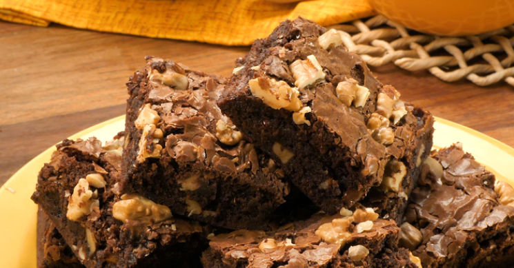

Brownie Super Fácil
A receita perfeita para a sua festa de família

Preparo
40min

Rendimento
8 Porções

Favoritos
95.577

Comentários
842
Ana Flávia Silva
Membro desde 2002
Preparo
40min
Rendimento
8 Porções
Favoritos
95.577
Comentários
842
Ana Flávia Silva
Membro desde 2002
O tradicional brownie de chocolate é uma preferência nacional, mas existem variações desse doce para agradar a todo mundo, desde o brownie de nescau até o brownie fit que leva cacau, o brownie low carb e o brownie vegano. Outra coisa que pode variar é a forma de fazer: geralmente é no forno, mas quer um brownie fácil que fica pronto em minutos? O brownie de caneca no microondas vai resolver a sua vida.
Confira a seguir algumas dicas para que seu brownie fique perfeito:
1) As pitadas de sal servem para realçar o sabor do chocolate: não deixe de usá-las!
2) Misture a farinha delicadamente para que a massa não fique pesada.
3) Usar forma de metal faz com que o brownie fique pronto mais rapidamente: se utilizá-la, fique de olho no tempo de forno.
Procurando mais receitas doces incríveis? Experimente as nossas receitas de brigadeirão, bolo de fubá cremoso, pavê de chocolate simples, bolo de cenoura, pudim de leite condensado, brigadeiro, cookie americano perfeito e a melhor receita de bolo de chocolate!
Se você adora receitas doces, confira nossas listas com pratos deliciosos:
Receitas com leite de coco: confira opções doces e salgadas
20 receitas com leite em pó: deliciosas e práticas